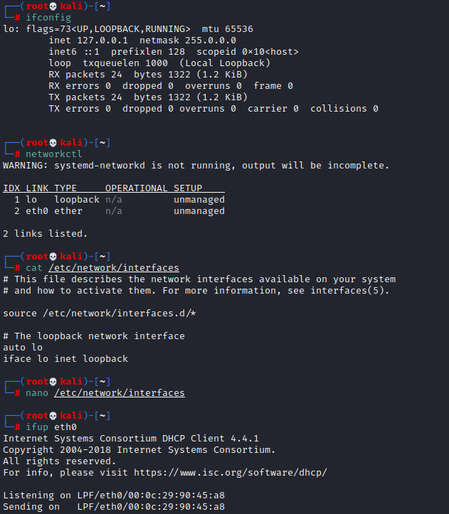

Troubleshooting
if eth0 inteface for internet does not show
• SOLUTION 1: instead of restart try:
sudo dpkg-reconfigure network-manager
Bibliography:
https://askubuntu.com/questions/394217/my-eth0-has-gone-and-i-dont-have-internet-and-network-connection• SOLUTION 2:
https://unix.stackexchange.com/questions/312480/debian-network-interface-does-not-work-any-more-after-update-upgrade OpenVPNif during the connection to a server with a file .ovpn gives error "failed to find GID for group nobody "
Check the configuration ovpn file and see which is the value of “group <value>”, the value should be nogroup or nobody. This depend on the value that we have associated to “group <value>” on our local machine in the file /etc/group
Normally so you should resolve by change "group nobody" to "group nogroup" in the configuration .ovpn file